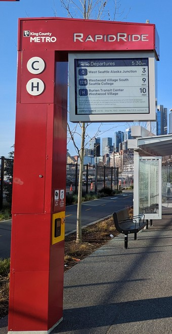
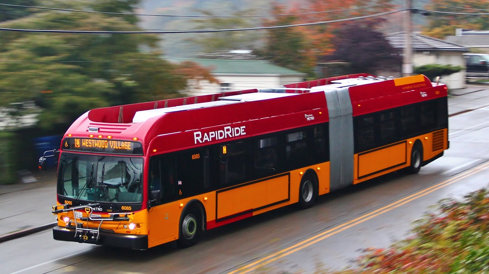
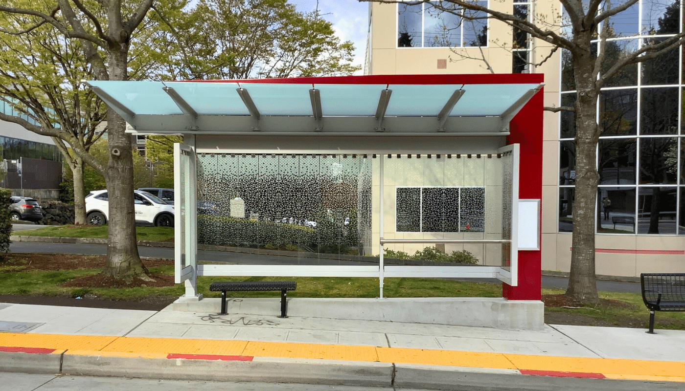
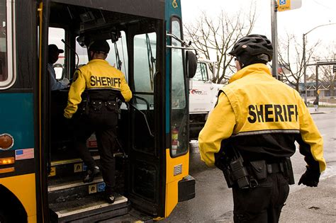
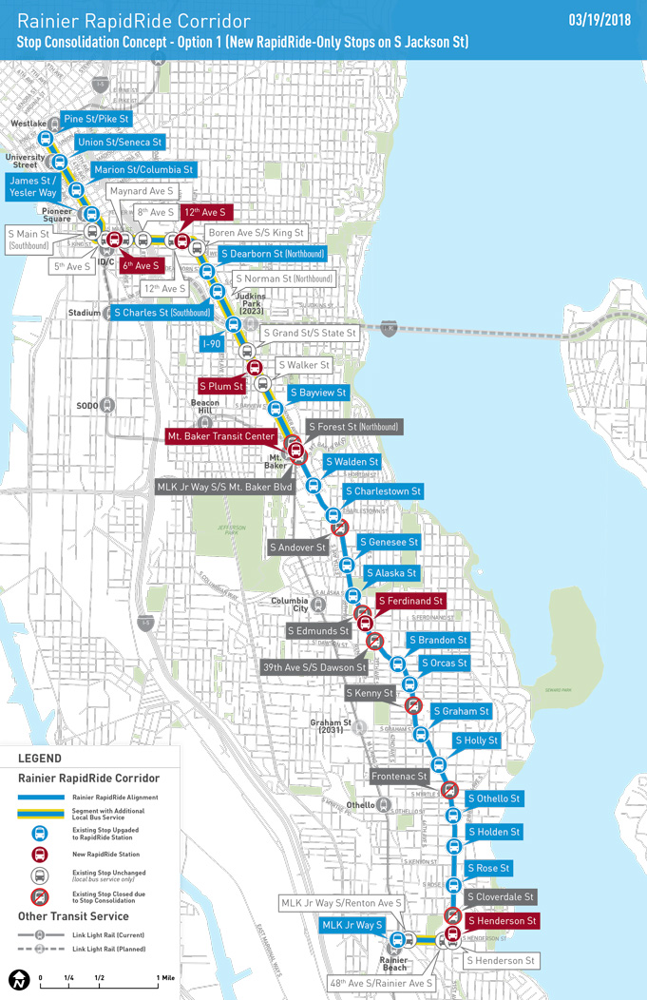
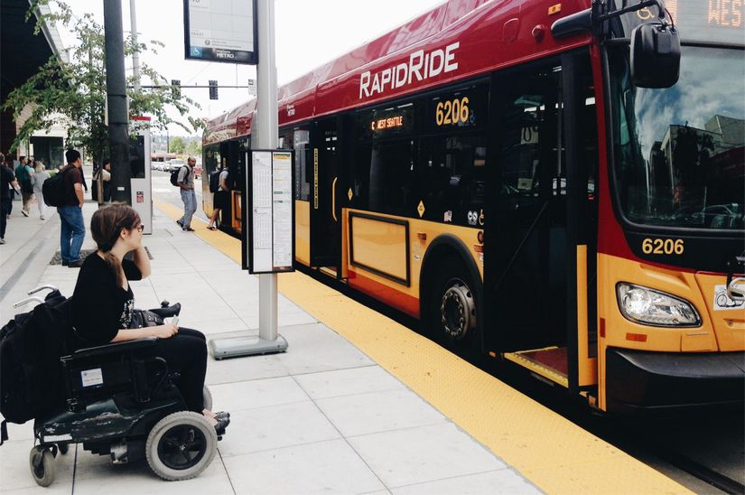

General RapidRide Features
The following features are general features of all RapidRide buses and lines:
Tech Pylons
The pylons vary by age and stop rider volume but generally include real-time arrival information, backlit route maps, and ORCA readers for off-board fare payment.
Branding
All RapidRide buses are painted in a distinctive red and silver livery to differentiate them from standard Metro buses. The branding extends to shelters, signage, and marketing materials to create a cohesive identity for the RapidRide network.
Enhanced shelters
All RapidRide stops feature enhanced shelters with improved area lighting and weather protection.
Transit Police Patrols
Lines feature regular transit police patrols both onboard and at stops for additional security.
Fewer Stops
RapidRide lines have far fewer stops than the routes they replaced, with an average spacing of about 1 mile between stops. This allows for faster travel times and improved reliability.
Accessibility Improvements
RapidRide lines are designed with accessibility in mind, featuring low-floor buses and level boarding platforms among other accessibility upgrades.
